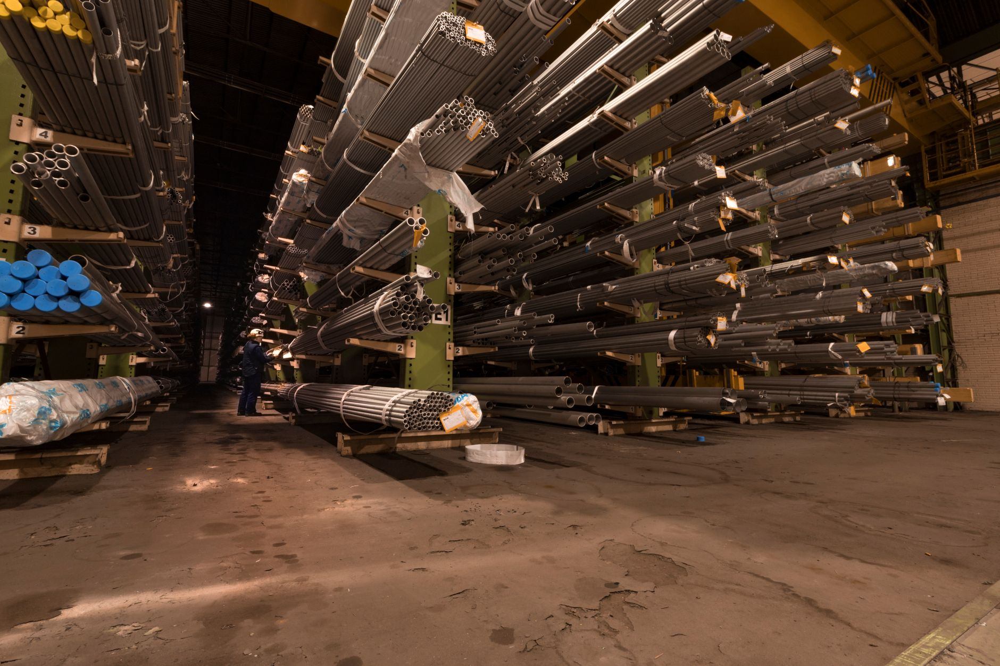

소부장 '슈퍼 을' 15곳 육성…5년 10조 집중 투자

정부가 반도체·디스플레이·이차전지·첨단소재 등 핵심 소부장 분야에 향후 5년간 총 10조원을 집중 투자하는 계획을 발표했다. 이 계획의 핵심은 글로벌 공급망에서 협상력이 높은 이른바 '슈퍼 을' 기업 15곳을 2030년까지 육성한다는 것이다. '슈퍼 을'은 특정 기술이나 부품을 세계 시장에서 독점적으로 공급할 수 있어 대형 고객사도 의존할 수밖에 없는 기업을 지칭한다.
이 계획은 소부장 분야의 기술 자립과 공급망 내재화가 국가 산업 경쟁력의 핵심 변수로 부상한 배경에서 나왔다. 미중 기술 패권 경쟁이 격화되고 수출통제·관세 조치가 잇따르면서, 특정 국가에 편중된 소재·부품 공급망의 취약성이 반복적으로 드러나고 있다. 특히 중희토류의 중국 의존도가 99%에 달하고, 핵심 반도체 소재 일부는 일본·미국에 대한 의존도가 높다는 점이 지속적으로 지적돼 왔다.
투자 계획에는 소부장 5조원 규모의 신규 펀드 조성과 5조원 규모의 상생무역 금융 공급이 포함됐다. 신규 펀드는 유망 소재·부품·장비 기업과 팹리스 기업에 직접 투자되며, 상생무역 금융은 중소 소부장 기업들의 해외 수출과 글로벌 공급망 진입을 지원하는 방식으로 운용된다.
정책 당국은 이번 계획이 단순한 자금 지원을 넘어 기술 자립 생태계 구축에 초점을 맞추고 있다고 강조했다. 산업부 관계자는 '반도체와 AI 데이터센터, 피지컬 AI 등 3대 메가 프로젝트가 핵심광물과 소부장의 뒷받침 없이는 경쟁력을 확보하기 어렵다'며 '공급망 내재화는 선택이 아닌 생존의 문제'라고 밝혔다.
방위산업과의 연계도 이번 정책의 주요 특징이다. 핵심광물·반도체·탄약·추진기관 등 방산 취약 공급망을 상시 관리하는 체계를 구축하고, 방산 중소기업의 적정 이윤과 장기 물량을 보장하는 방안이 검토되고 있다. AI·드론·로봇·첨단소재 분야 민간 기업이 방산 시장에 신속히 진입할 수 있도록 규제 완화도 추진된다.
납품단가 연동제도 확대도 소부장 업계의 주요 관심사다. 원자재 가격 변동이 즉각적으로 납품 단가에 반영되는 연동제가 확대되면 소재·부품 기업들의 수익 구조가 안정화될 수 있다. 최근 구미 소재 중견 반도체 소부장 3사가 영업이익률 20%를 돌파하며 수익성 개선을 증명한 것도 정책 방향의 타당성을 뒷받침하는 사례로 꼽힌다.
글로벌 소부장 경쟁도 치열해지고 있다. 중국은 자국 소부장 기업 육성에 막대한 보조금을 쏟아붓고 있으며, 일본은 자국 소재 기업의 해외 M&A와 기술 제휴를 통해 공급망 장악력을 높이고 있다. 미국은 인플레이션 감축법(IRA)에 이어 반도체·핵심소재 분야에 대한 세액공제와 보조금 지급으로 자국 생산 유치에 나서고 있다.
한국 소부장 업계 내부에서는 정책 지원의 실효성을 높이기 위한 선택과 집중이 필요하다는 목소리가 크다. 업계 전문가는 '10조원이 적은 금액은 아니지만 분산 투자보다는 글로벌 경쟁력을 갖출 수 있는 특정 분야에 집중해야 슈퍼 을 육성이 현실화될 수 있다'고 지적했다.
AI 서버용 PCB 드릴비트 품귀 현상이 소부장 공급망의 취약성을 보여주는 사례로 주목받고 있다. AI 서버용 PCB는 여러 층으로 쌓인 회로를 연결하는 초미세 드릴이 필수적인데, PCB 소재가 단단해지면서 드릴비트 수요가 폭증하고 있다. 이처럼 예상치 못한 병목 소재가 언제든 등장할 수 있다는 점에서 소부장 전반에 대한 선제적 공급망 관리가 중요하다.
이번 정책 발표와 함께 소부장 관련 중소·중견 기업들의 R&D 투자 세액공제 확대와 규제 샌드박스 적용 범위 확대도 검토되고 있다. 특히 첨단소재·반도체 장비 분야에서 국내 스타트업들이 글로벌 시장에 진입할 수 있도록 테스트베드 제공과 인증 지원도 강화될 예정이다.
업계는 이번 10조원 투자 계획이 단기 성과보다 중장기 기술 생태계 구축에 집중되길 기대하고 있다. 소부장 분야의 기술 개발 사이클은 통상 5~10년 이상이 필요하기 때문에, 정권 교체와 무관하게 지속 가능한 지원 체계를 법제화하는 것이 관건이라는 지적도 나온다.
향후 시장 전망과 투자 시사점으로는, 슈퍼 을 육성 정책의 수혜 기업으로 선정된 소부장 기업들에 대한 시장의 관심이 집중될 것으로 예상된다. 특히 반도체 특수 소재, AI 서버용 부품, 방산 연계 소재 분야에서 정부 지원과 민간 투자가 맞물리는 구조가 만들어지면 관련 기업들의 밸류에이션 재평가로 이어질 수 있다는 분석이 나온다.